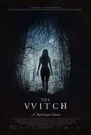
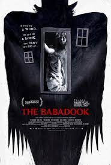
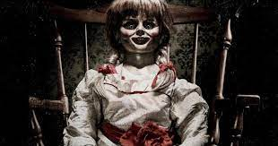
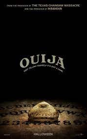
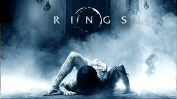
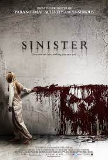
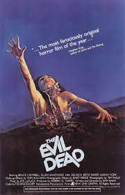
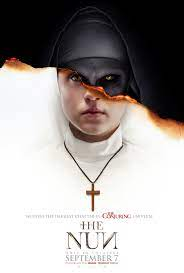
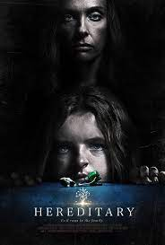

In this website, you will know about the most horror and scary movie that you will definitely avoid to watch alone.
Lets start the list with number 10.
Number 10
The witch
The Witch (stylized as The VVitch, and subtitled A New-England Folktale) is a 2015 folk horror film[7] written and directed by Robert Eggers in his feature directorial debut. It stars Anya Taylor-Joy (in her first film appearance), Ralph Ineson, Kate Dickie, Harvey Scrimshaw, Ellie Grainger, and Lucas Dawson. Set in the 1630s, it follows a Puritan family who encounter forces of evil in the woods beyond their New England farm. An international co-production of the United States and Canada, The Witch premiered at the Sundance Film Festival on January 27, 2015, and was widely released by A24 on February 19, 2016, to critical and financial success, grossing $40 million against a $4 million budget. It is considered by some to be one of the best horror films of 2016.
Click here to online watch movieNumber 9
The Babadook
The Babadook is a 2014 Australian psychological horror film written and directed by Jennifer Kent in her directorial debut, and produced by Kristina Ceyton and Kristian Moliere. The film stars Essie Davis, Noah Wiseman, Daniel Henshall, Hayley McElhinney, Barbara West, and Ben Winspear. It is based on Kent's 2005 short film Monster, which follows a single mother who must confront her son's fear of a monster in their home.
Click here to online watch movieNumber 8
Annabelle (Series)
Annabelle is a 2014 American supernatural horror film directed by John R. Leonetti, written by Gary Dauberman and produced by Peter Safran and James Wan. It is a prequel to the 2013 film The Conjuring and the second installment in the Conjuring Universe franchise. The film was inspired by a story of a doll named Annabelle told by Ed and Lorraine Warren.[3] The film stars Annabelle Wallis, Ward Horton, and Alfre Woodard. A spin-off focusing on the origins of the Annabelle doll that was introduced in The Conjuring was announced shortly after The Conjuring's release, mainly due to its worldwide box office success and the positive reception towards the depiction of the doll. Principal photography began in January 2014 in Los Angeles.
Click here to online watch movieNumber 7
Ouija: Origin of Evil (Series)
Ouija: Origin of Evil is a 2016 American supernatural horror film directed and edited by Mike Flanagan and written by Flanagan and Jeff Howard. The film is a prequel to the 2014 film Ouija and stars Elizabeth Reaser, Annalise Basso, and Henry Thomas. A widow and her family introduce a Ouija board into their phony seance business, thereby inviting a spirit that possesses the youngest daughter. Ouija: Origin of Evil was released in the United States on October 21, 2016, by Universal Pictures. The film grossed over $81 million worldwide and received acclaim, with many praising it as a significant improvement over its predecessor.
Click here to online watch movieNumber 6
Ring 2002 (Series)
The Ring is a 2002 American supernatural horror film directed by Gore Verbinski from a screenplay by Ehren Kruger, starring Naomi Watts, Martin Henderson, David Dorfman, Brian Cox, and Daveigh Chase. It is a remake of Hideo Nakata's 1998 Japanese horror film Ring, based on Koji Suzuki's 1991 eponymous novel. Watts portrays a journalist who investigates a cursed videotape that seemingly kills the viewer seven days after watching it. The Ring was released theatrically on October 18, 2002, and received mostly positive reviews, with critics praising the atmosphere, visuals, and Watts's performance. The film grossed over $249 million worldwide on a $48 million production budget, making it one of the highest-grossing horror remakes. It is the first installment of the English-language Ring series, and is followed by The Ring Two (2005) and Rings (2017).
Click here to online watch movieNumber 5
Sinister
Sinister is a 2012 American supernatural horror film directed by Scott Derrickson and written by C. Robert Cargill and Derrickson. It stars Ethan Hawke as a struggling true-crime writer whose discovery of videos depicting grisly murders in his new house puts his family in danger. Juliet Rylance, Fred Thompson, James Ransone, Clare Foley, and Michael Hall D'Addario appear in supporting roles. Sinister was inspired by a nightmare Cargill had after watching the 2002 film The Ring. Principal photography on Sinister began in Autumn of 2011 in Long Island, NY with a production budget of $3 million. To add the authenticity of old home movies and snuff films, the Super 8 segments were shot on actual Super 8 cameras and film stock. The film was a co-production between the United States, Canada, and the United Kingdom.
Click here to online watch movieNumber 4
Evil Dead (Series)
The Evil Dead is a 1981 American supernatural horror film written and directed by Sam Raimi, produced by Robert Tapert and executive produced by Raimi, Tapert, and Bruce Campbell, who also starred alongside Ellen Sandweiss, Richard DeManicor, Betsy Baker and Theresa Tilly. The film focuses on five college students vacationing in an isolated cabin in a remote wooded area. After they find an audio tape that, when played, releases a legion of demons and spirits, four members of the group suffer from demonic possession, forcing the fifth member, Ash Williams (Campbell), to survive an onslaught of increasingly gory mayhem.
Click here to online watch movieNumber 3
The Nun
The Nun is a 2018 American gothic supernatural horror film directed by Corin Hardy and written by Gary Dauberman, from a story by Dauberman and James Wan. It is a spin-off/prequel of 2016's The Conjuring 2 and the fifth installment in the Conjuring Universe franchise. The film stars Demián Bichir, Taissa Farmiga and Jonas Bloquet, with Bonnie Aarons reprising her role as the Demon Nun, an incarnation of Valak, from The Conjuring 2. The plot follows a Roman Catholic priest and a nun in her novitiate as they uncover an unholy secret in 1952 Romania.
Click here to online watch movieNumber 2
Hereditary
Hereditary is a 2018 American supernatural psychological horror film written and directed by Ari Aster in his directorial debut. It stars Toni Collette, Alex Wolff, Milly Shapiro, and Gabriel Byrne as the members of a family haunted by a mysterious presence after the death of their secretive grandmother. Aster's short film work attracted the attention of A24, who greenlit Hereditary as his first feature film. Aster conceived it as primarily a family drama and a story consisting of two distinct halves. Filming took place in Utah in 2017, with most indoor scenes filmed on custom built sets on a sound stage to give the film a dollhouse aesthetic.
Click here to online watch movieNumber 1
The Conjuring 2 (Series)

The Conjuring is a 2013 American supernatural horror film directed by James Wan and written by Chad Hayes and Carey W. Hayes. It is the inaugural film in the Conjuring Universe franchise. Patrick Wilson and Vera Farmiga star as Ed and Lorraine Warren, paranormal investigators and authors associated with prominent cases of haunting. Their purportedly real-life reports inspired The Amityville Horror story and film franchise.[5] The Warrens come to the assistance of the Perron family, who experienced increasingly disturbing events in their farmhouse in Rhode Island in 1971.
Click here to online watch movie